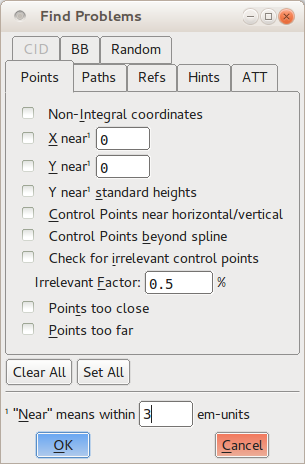
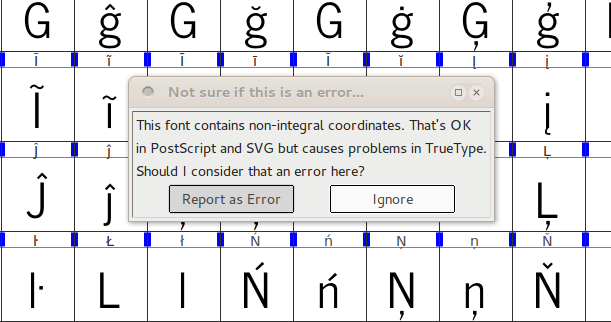
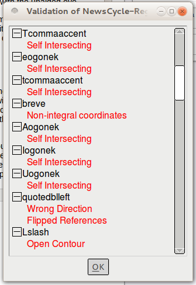
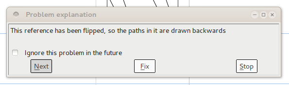

Проверка работоспособности шрифта, проверка
В идеальном мире шрифт можно было бы собрать и установить на любой современный компьютер без каких-либо особых усилий, но реальность сложнее —, особенно в процессе проектирования. Шрифты могут содержать технические ошибки, из-за которых они не работают и не отображаются правильно. Например, кривые, которые пересекают сами себя, не будут отображаться правильно, поскольку у них нет “inside” и “outside”. Различные форматы файлов шрифтов также ожидают, что глифы будут соответствовать определенным правилам, которые упрощают размещение текста на экране, а шрифты, нарушающие эти правила, могут вызвать неожиданные проблемы. Примером проблемы такого типа является то, что координаты всех точек кривой должны быть целыми числами. Наконец, есть стилистические ошибки, которые не являются технически неправильными, но которые все равно задача исправить —, например линии, которые должны были быть идеально горизонтальными или вертикальными, но случайно оказались слегка смещенными.
FontForge предлагаются инструменты, которые можно использовать для обнаружения (и, во многих случаях, устранения) всех трех категорий проблем. Проверка шрифта на устранение этих ошибок, таким образом, не только гарантирует, что он будет установлен и понравится пользователям, но также и то, что готовый проект будет выглядеть безупречно.
Поиск Проблемы
Первый инструмент называется Find Problems и находится в меню Element. Сначала необходимо выбрать один или несколько глифов — в представлении шрифтов, в представлении структуры или в представлении показателей — а затем открыть инструмент Find Problems. Инструмент представляет набор потенциальных проблем на восьми отдельных вкладках.

Можно выбрать, какие проблемы интересуют, установкой флажка рядом с каждой из них и в некоторых случаях указать числовое значение для проверки шрифта. Когда нажать кнопку «ОК», инструмент проверит все выбранные глифы и сообщит о любых обнаруженных проблемах в диалоговом окне.
Проблемы, которые может обнаружить инструмент Find Problems, разделены на следующие восемь групп:
- Проблемы связанные с точками
- Проблемы с путями и кривыми
- Проблемы со ссылками
- Проблемы с хинтированием
- Проблемы с ATT
- Проблемы, характерные для шрифтов с ключом CID
- Проблемы с ограничивающими рамками
- Разные другие проблемы
Не каждая проверка необходима; некоторые применяются только к определенным алфавитам или языкам (например, на вкладке “CID”), тогда как другие применяются только к определенным дополнительным функциям шрифта (например, флажкам на вкладке “Refs”). Следует убедиться, что шрифт проходит тесты, проверяющие глифы на наличие необходимых функций, а также несколько тестов, проверяющих необязательное, но обычно ожидаемое поведение. Некоторые другие тесты предоставляют обратную связь и рекомендации в процессе проектирования, и именно по этой причине их стоит изучить.
Перво-наперво: протестировать необходимые функции
На вкладке “Points” выбрать тест Non-Integral Coordinates. Тест гарантирует, что все точки в каждом глифе (включая точки на кривой и контрольные точки) имеют целочисленные координаты. Не каждый формат вывода шрифтов требует такого поведения, но некоторые требуют.
На вкладке “Paths” выбрать параметры Open paths и Check outermost paths clockwise. Обе эти функции являются обязательными для всех шрифтов; первый ищет любые кривые, которые не являются замкнутыми фигурами, а второй следит за тем, чтобы внешние кривые каждого глифа прорисовывались по часовой стрелке. Очень хорошая идея также проверить Intersecting paths; хотя современные форматы шрифтов могут поддерживать два пересекающихся контура, кривые, пересекающиеся сами с собой, не допускаются. Кроме того, если глиф имеет самопересекающиеся пути, FontForge не сможет выполнить тест Check outermost paths clockwise.
На вкладке “Refs” выбрать все шесть тестов. Все эти проверки относятся к ссылкам, в которых глиф включает пути от другого глифа. Например, буква с ударением включает ссылку на исходную (без ударения) букву, а также ссылку на символ ударения. Все тесты на вкладке “Refs” обязательны как минимум для одного распространенного формата вывода, и все они являются хорошими идеями.
Аналогичным образом выбрать все тесты на вкладке “ATT”. Эти тесты ищут отсутствующие имена глифов, правила замены, относящиеся к несуществующим глифам, а также другие проблемы, связанные с именами глифов или функциями OpenType. Проблемы, от которых они защищаются, редки, но все они приводят к тому, что шрифт будет считаться недействительным одной или несколькими компьютерными системами, поэтому их стоит включить.
Облегчить жизнь пользователям: тест на хорошее поведение
Перечисленные выше тесты гарантируют, что шрифт устанавливается и отображается правильно в соответствии с правилами, установленными различными форматами шрифтов, но есть несколько других тестов, которые следует рассмотреть возможность добавления —, особенно в конце процесса проектирования — просто потому, что они проверьте общие соглашения, которым следует большинство современной типографики.
На вкладке “Points” выбрать Control points beyond spline. Тест будет искать контрольные точки, лежащие за конечными точками сегмента кривой, на котором они находятся. Редко бывает причина, по которой контрольная точка должна находиться за пределами кривой, поэтому такие случаи обычно означают несчастные случаи. Также рекомендуется выбрать Points too far apart, что будет искать точки, находящиеся на расстоянии более 32 767 единиц от следующей ближайшей точки. Это расстояние больше, чем большинство компьютеров могут справиться внутри себя, и точка, находящаяся так далеко, почти наверняка является непреднамеренной (для сравнения, один глиф имеет тенденцию рисоваться на сетке из примерно 1000 единиц), поэтому удаление таких точек важно.
На вкладке “Paths” могут быть полезны как тесты Check Missing Extrema, так и More Points Than [val]. Первое ищет точки экстремумов — то есть самую верхнюю точку, самую нижнюю точку, а также самую левую и самую правую точки глифа. Современные форматы шрифтов настоятельно предполагают, что каждый путь имеет точку на каждом из горизонтальных и вертикальных экстремумов; облегчает жизнь, когда шрифт отображается на экране или на странице проверки будет искать недостающие точки экстремума. Второй тест — проверка правильности количества точек внутри любого глифа. Значение по умолчанию FontForge для этой проверки составляет 1500 пунктов, это значение, предложенное в документации PostScript, и оно достаточно почти для всех шрифтов.
Как следует из названия, на вкладке “Random” перечислены различные тесты, которые не входят в другие категории. Из них ценны последние три: Check Multiple Unicode, Check Multiple Names и Check Unicode/Name mismatch. Они ищут ошибки метаданных в сопоставлении имен глифов и слотов Юникода.
Угощайтесь: запуск тестов, которые могут помочь в проектировании
Многие другие тесты в инструменте Find Problems могут быть полезны для поиска и определения несоответствий в коллекции глифов —, которые не являются неправильными или недействительными, но которые пользователь, как дизайнер, захочет исправить. Например, тест Y near standard heights на вкладке “Points” сравниваются глифы с набором полезных вертикальных измерений: базовой линией, высотой глифа “x”, самой нижней точкой нижнего элемента буквы “p” и так далее. В единообразном шрифте большинство букв будут соответствовать как минимум паре этих стандартных размеров, поэтому есть вероятность, что глиф, который не имеет ни одного из них, потребует большой работы.
Тест Edges near horizontal/vertical/italic на вкладке “Paths” ищет сегменты линий, которые почти точно расположены по горизонтали, вертикали или под углом наклона шрифта. Если сделать почти вертикальные линии идеально вертикальными, то при использовании шрифта фигуры будут отображаться четко, и этот тест — надежный способ отследить не совсем правильные сегменты, которые может быть трудно обнаружить невооруженным глазом.
Использовать другие тесты для определения точек на кривой, которые расположены слишком близко друг к другу, чтобы иметь смысл, для сравнения боковых направлений глифов одинаковой формы и для выполнения ряда других тестов, которые выявляют наличие глифов со странностями. Часть процесса доработки заключается в том, чтобы взять первоначальные проекты и сделать их более точными; Как и другие аспекты дизайна шрифтов, это итеративная задача, поэтому использование встроенных инструментов позволяет сократить количество повторений.
Проверить шрифт
Другой инструмент проверки FontForge — это валидатор всего шрифта, который запускает серию тестов и проверяет весь шрифт. Поскольку валидатор используется для проверки всего шрифта, запустить его можно только из окна просмотра шрифта; найти его в меню Element в подменю Validation. Валидатор предназначен для запуска только тех тестов, которые проверяют шрифт на техническую корректность — по сути, это тесты, описанные в разделе “test for required features” выше. Но выполняются тесты для всего шрифта, и делает это гораздо быстрее, чем можно выполнить этот процесс самостоятельно, используя инструмент Find Problems.

При первом запуске валидатора во время определенного сеанса редактирования появится диалоговое окно с вопросом, следует ли помечать нецелочисленные координаты точки как ошибку. Безопасный ответ — выбрать “Report as an error,”, поскольку использование целочисленных координат является хорошей практикой проектирования. Когда валидатор завершит сканирование шрифта (что произойдет всего через несколько секунд), откроется новое диалоговое окно с именем Validation из [font name]. В этом окне будут перечислены все проблемы, обнаруженные валидатором, в виде списка, отсортированного по глифам.

Но это окно представляет собой не просто список ошибок: дважды щелкнуть каждый элемент в списке, и FontForge перейдет к соответствующему значку и выделит точную проблему с текстовым объяснением в отдельном окне. Затем можно исправить проблему в редакторе глифов, и соответствующий элемент ошибки немедленно исчезнет из списка ошибок валидатора. Во многих случаях FontForge может автоматически исправить ошибку, а в окне объяснения будет кнопка “Fix” внизу. Можно нажать на нее и выполнить исправление без дополнительных усилий.

Некоторые проблемы не подлежат автоматическому исправлению, но, увидев проблему на экране, можно исправить ее немедленно. Например, у самопересекающейся кривой есть определенное место, где путь пересекает сам себя — возможно, оно было слишком маленьким, чтобы заметить его с первого взгляда, но увеличение масштаба позволит изменить форму пути и устранить проблему.
Для других проблем может не быть одной конкретной точки, в которой находится ошибка. Например, если кривая прослеживается в неправильном направлении (то есть против часовой стрелки, хотя должно быть по часовой стрелке), это повлияет на всю кривую. В тех случаях, когда FontForge не может автоматически решить проблему и на глифе нет конкретной точки, которую валидатор мог бы выделить, вам, возможно, придется поискать, чтобы исправить проблему вручную.
Наконец, есть некоторые тесты, выполняемые валидатором, которые могут не быть проблемой для конечного выходного формата, который имеется в виду —, например, тест нецелых координат, упомянутый ранее. В таких случаях установить флажок “ignore this problem in the future” в окне объяснения ошибки и отключить это конкретное сообщение об ошибке при будущих запусках проверки.
Устранять проблемы при редактировании
Большинство ошибок, которые ищет инструмент Find Problems и вся программа проверки шрифтов, можно исправить в процессе редактирования, поэтому не ощущайте необходимости откладывать устранение неполадок на время работы. Например, подменю View > Show содержит параметры, выделяющие проблемные области во время редактирования; меню Element содержит команды, такие как Add Extrema, которые добавляют точки экстремума, ожидаемые в большинстве форматов выходных файлов, и флажки, указывающие, ориентирован ли выбранный путь по часовой стрелке или против часовой стрелки. Если перевернуть фигуру (по горизонтали или вертикали) в редакторе глифов, заметно, что ее направление также автоматически изменится на противоположное. Если нажать команду Correct Direction в меню Element, FontForge немедленно зафиксирует ориентацию по часовой стрелке/против часовой стрелки. Выработав привычку вносить подобные небольшие исправления в процессе работы, сэкономить немного времени на этапе проверки позже.
Работает ли дизайн?
Гарнитуры могут ‘работать’ лучше или хуже по двум причинам: читаемость и разборчивость.
Разборчивость означает, что рисунки глифов достаточно различимы, чтобы их можно было сразу правильно распознать. Вот некоторые пары, которые часто слишком похожи:
- буква “L” и цифра “1”
- буква “O” и цифра “0”
- буква “Z” и цифра “2”
- числа “1” и “7”
Читабельность означает, что все глифы хорошо работают вместе, обеспечивая привычное и удобное чтение. Создание тестовых документов — лучший способ обеспечить это. Если есть полный алфавит, набирать реальный текст — например, используя FontFriend, чтобы перетащить шрифт в длинную новостную статью, которую задача прочитать, а затем распечатайте его.
Однако, если шрифт содержит только часть алфавита, использовать тестовый генератор текста, например LibreText и любой текстовый процессор, настольное приложение для публикаций или общая программа для иллюстраций (например, Inkscape) создавать тестовые документы.
Тестирование шрифта в разных средах
При тестировании шрифтов в Microsoft Windows Расширение свойств шрифта может быть полезно для быстрого просмотра внутренних метаданных шрифта, таких как номера версий.
Если устанавливаются разрабатываемые шрифты, из-за которых Windows работает нестабильно, John Hudson описал, как удалить поврежденные шрифты в TypeDrawers:
Перезагрузить Windows в режиме консоли восстановления. В консоли перейти в папку Windows/Fonts и удалить все записи для шрифта Rhodium. Затем перейти в Windows/System32 и удалить файл ‘FNTCACHE.DAT’ (not the .dll). Затем перезапустить Windows. Файл кэша шрифтов .dat будет перестроен, а затем можно переустановить чистую копию шрифта Rhodium и посмотреть, будет ли он себя вести. (Не волноваться, если по-прежнему получать сообщение о том, что шрифт уже установлен: на этом этапе Windows лжет.)